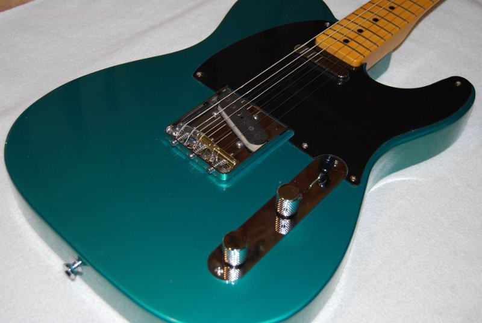
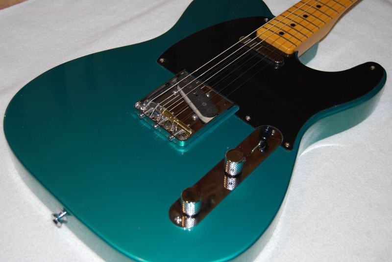

Beautifully Custom Built For You
We take immense pride in our craftsmanship when it comes to building custom guitars. Our dedication to precision, quality, and personalized design shines through in every instrument we create, making our guitars a great choice for musicians seeking unique, handcrafted guitars.
Meet Austin
Austin is known for his approachable nature and willingness to engage in thoughtful conversations. His dedication to achieving excellence in his endeavors is marked by his commitment to continual improvement and his readiness to embrace challenges as learning opportunities. Austin's strong sense of environmental responsibility is reflected in his conscientious use of materials, ensuring minimal waste. In his work crafting custom guitars, Austin's passion shines through. He takes a hands-on approach, pays meticulous attention to quality, and wholeheartedly strives to create exceptional instruments for musicians.
Why we make guitars
In mid-2007, Austin started with a twelve-string acoustic guitar,
which was what he learned on and always had. His friend Terry
advised him to get a six-string for playing lead, as the
twelve-string was more suited for chords. Unable to afford the
guitar he wanted, Austin decided to build one. While searching for
guitar-building tips, he found a lack of information on what NOT to
do. This led him to create a blog to document his mistakes and help
others avoid them.
After Terry introduced Austin to his Fender Telecaster,
Austin fell in love with its sleek design and vintage twang. He
decided to focus on custom Telecasters, combining knowledge from top
players and critics. If you can dream it, we can likely build it for
you. Today, we make nearly any guitar you can think of and we love a
challenge to the end. We hope you'll enjoy one someday.


 
